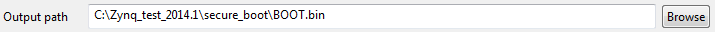

You can specify the partitions and related information in the Boot Image Partitions area. The partitions list displays the summary of the partitions in the BIF file. It shows the file path, encryption settings, and authentication settings.

Use this area to add, delete, modify, and reorder the partitions. You can also set values for enabling encryption, authentication, and checksum, and specifying some other partition related values like Load, Alignment and Offset.
Adding a Partition
Click Add to add a partition. The table below lists the settings available for both Zynq® and Zynq® UltraScale+ ™ MPSoC architectures :
Setting |
Description |
|---|---|
| For Zynq Architecture | |
Partition Type |
Select the partition type:
|
File Path |
The path to the partition file. |
Authentication |
Select from the drop down menu, if authentication needs to be made applicable to this partition.
|
Encryption |
Select from the drop down menu, if encryption needs to be made applicable to this partition.
|
Checksum |
Select from the drop down menu, if checksum needs to be made applicable to this partition. md5: enables md5 checksum for this partition. none: disables the checksum for this partition. |
Presign |
When SSK authentication is not given in the main menu, user needs to make sure that presign file, which is nothing but presigned partition signature is specified. This field is enabled only when authentication is enabled. |
Alignment |
Sets the byte alignment of the package. Cannot be used with Offset. The partition will be padded to be aligned to a multiple of this value. |
Offset |
Sets the absolute offset of the package in the boot image. Cannot be used with Alignment. |
Reserve |
Reserves a total amount of memory for this partition. The partition will be padded to this amount. |
Load |
Sets the load address for the partition, such as where it will be written to. |
Startup |
Sets the entry address for the partition, after it is loaded. This is ignored for partitions that don’t execute. |
| For Zynq UltraScale+ MPSoC Architecture | |
Destination CPU |
Sets the processor where the partition should be executing. Supported options are:
|
Destination Device |
Sets the device where the partition will be loaded. Supported options are:
|
Deleting a Partition
Select any partition and click Delete to remove it from the list.
Editing a Partition
Select any partition and click Edit to modify the options for that partition.
Rearranging Partitions
Select any partition and click Up or Down to rearrange their order in the partition list.
Output File
The output file and path name are specified in the Output Path field. This identifies where the output binary image is generated.

Two output formats are supported: *.bin and *.mcs . The final boot image format is set based on the extension specified in the output path.